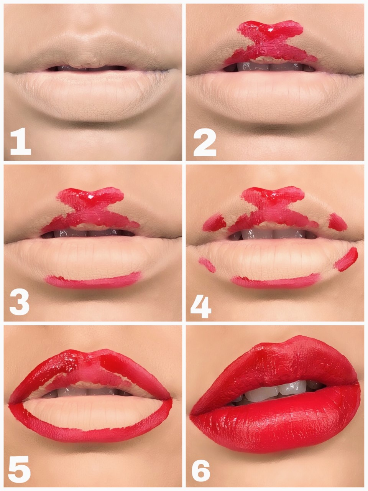
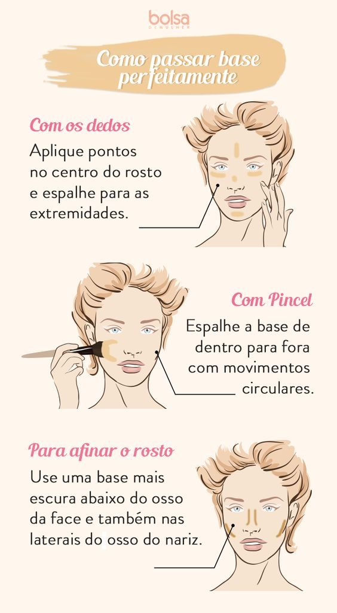
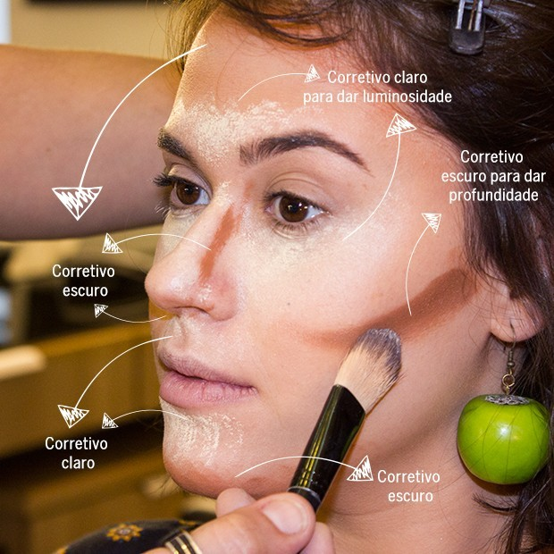
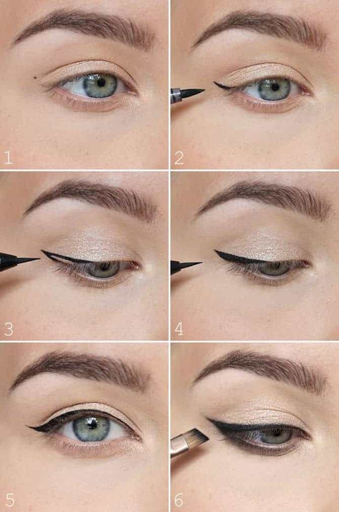
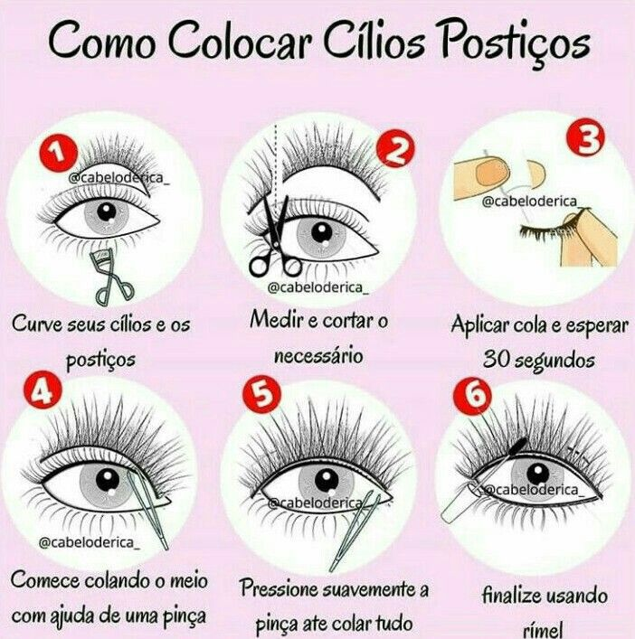

A maquiagem é uma aliada indispensável da beleza feminina. Usando-a corretamente, ela tem o poder de destacar o que há de mais bonito na mulher e disfarçar imperfeições.
PARA UMA BOCA PERFEITA!
COMO PASSAR A BASE!
COMO FAZER UM CONTORNO
COMO FAZER UM DELINEADO
Comece traçando uma linha a partir do canto externo do olho em direção ao final da sua sobrancelha; Depois, faça um traço a partir do topo da linha para o centro da sua pálpebra. É aqui que você define a espessura do delineado de gatinho; Agora é hora de marcar a espessura desejada e esticar a linha em direção ao canto interno do seu olho; Em seguida, passe o delineador bem rente a raiz dos cílios, preenchendo o traço da parte mais interna do olho até o canto externo; Então, basta preencher o contorno do traço de gatinho; Para destacar ainda mais o olhar, faça o uso de uma máscara para cílios. Fazer o próprio delineado gatinho não precisa ser uma tarefa complicada. Ainda mais depois de conferir esse passo a passo, não é mesmo? É claro que um pouco de prática ajuda a obter um bom resultado.
COMO COLAR CÍLHOS POSTIÇO
